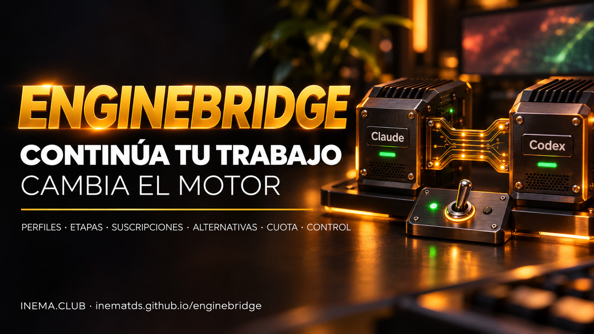
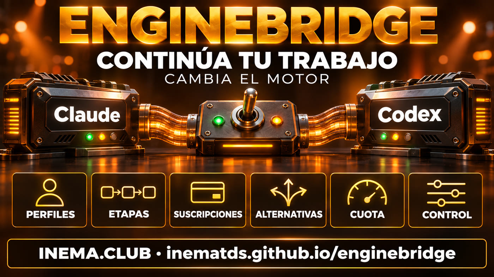

¿Tus bots y scripts usan Claude Code o Codex? Elige el motor de cada etapa y descubre cuándo puede hacerse cargo otra suscripción. Empieza por la simulación; después integra tus sistemas.
v1.0.0 · Núcleo local · Integraciones pendientes

Tu automatización puede detenerse cuando una suscripción alcanza su cuota, aunque tengas otra disponible. EngineBridge es una herramienta local para elegir qué motor de IA se encarga de cada etapa y usar una alternativa declarada cuando esté permitido. Está pensada para quienes mantienen bots, scripts y rutinas con Claude Code y Codex. Defines perfiles, modelos y esfuerzo; el programa resuelve la elección sin consultar a una IA. Para ejecutar textos, necesitas Python y los programas autenticados mediante suscripción.

Puedes preferir Codex en todo el sistema y reservar Claude para la crítica. Cada motor conserva sus propios modelos y niveles de esfuerzo. Una etapa fijada solo cambia a una alternativa declarada.
El programa puede suspender la cuenta y elegir la siguiente alternativa sin pedirle a una IA que tome esa decisión. La suscripción de destino sigue consumiendo su propia cuota. El núcleo no consulta el saldo ni garantiza que la otra cuenta esté disponible.
Un rechazo estructurado por cuota, antes de cualquier respuesta parcial o herramienta, puede activar la alternativa declarada.
Los procesos integrados que comparten el mismo estado dejan de admitir nuevos trabajos con esa cuenta durante la suspensión.
Un timeout, un error local o una respuesta rechazada por el proyecto interrumpen el intento. Las publicaciones y otras acciones externas requieren una verificación propia.
El núcleo resuelve políticas, ejecuta textos mediante los programas de suscripción y coordina intentos con una base de datos local. Las pruebas usan ejecutores ficticios y verifican el cambio, la concurrencia y la interrupción. OpenPCBotV3, Refazvideo y los crons todavía no usan esta biblioteca. En esta entrega no se han probado los dos adaptadores con los programas reales.
Los niveles menor, executor, topo y super reutilizan la configuración central existente. Low en un modelo no equivale a low en otro. Los perfiles pueden declarar excepciones; las combinaciones deben compararse en tareas reales, con los validadores de cada proyecto.
No necesitas esta parte para entender lo anterior.
Motor es el programa que llama al modelo. Perfil reúne motor, modelo y esfuerzo. Etapa es una parte del trabajo, como guion o crítica. Nivel expresa la exigencia del trabajo; los nombres executor, topo y super son opciones de tu configuración. Pool es el grupo que comparte la misma cuota de cuenta. MCP es una conexión con herramientas externas, desactivada en este ejecutor de texto. Rechazo estructurado es un código de error que el programa puede interpretar; un texto de error sin formato no basta para cambiar automáticamente.
Requiere Python 3.11+ y PyYAML 6. Para resolver los perfiles de demostración no necesitas iniciar sesión ni tener saldo. Para ejecutar, ajusta las rutas de los programas y usa cuentas autenticadas mediante suscripción.
git clone https://github.com/linnoff88-dev/enginebridge.git
cd enginebridge
python3 -m venv .venv
source .venv/bin/activate
python3 -m pip install -e .
python3 -m unittest discover -s tests -v
python3 -m enginebridge resolve --project demonstracao --stage roteiroEl primer ejecutor ficticio rechaza la solicitud por cuota. El segundo recibe la petición. La salida contiene simulado: true; el estado se mantiene separado de la base de datos predeterminada.
printf 'Escreva um roteiro.' | python3 -m enginebridge --state .state/demo.sqlite run --project demonstracao --stage roteiro --simulate --fail-firstEl archivo config/enginebridge.yaml reúne la política local. Los niveles heredados leen ~/.config/ARCKHÉ/modelos.env; los perfiles de abajo son excepciones explícitas. OpenRouter sigue deshabilitado y no hay adaptador de API.
perfis:
codex-principal:
motor: codex
modelo: gpt-6.1-sol
esforco: medium
claude-alternativo:
motor: claude
modelo: claude-opus-5-5
esforco: low
projetos:
demonstracao:
etapas:
roteiro:
perfil: codex-principal
alternativa: claude-alternativo
critica:
perfil: claude-alternativo
alternativa: codex-principalInstala los programas Claude Code y Codex e inicia sesión con tu suscripción usando los comandos de abajo en tu terminal. Ajusta binario en el YAML para indicar la ruta de instalación. Si usas un directorio específico de cuenta de Codex, cuenta_env apunta a un archivo que contiene solo CODEX_HOME=/caminho/da/conta; sin ese archivo, el programa usa tu cuenta predeterminada. En una instalación nueva sin modelos.env central, el comando de copia de abajo crea un ejemplo solo si el archivo todavía no existe.
codex login
claude auth login
mkdir -p ~/.config/ARCKHÉ
test -f ~/.config/ARCKHÉ/modelos.env || cp config/modelos.example.env ~/.config/ARCKHÉ/modelos.envLa preferencia modifica solo el YAML de este proyecto y afecta las próximas resoluciones que no tengan un motor fijado. El ejemplo usa la etapa padrao, que hereda el motor global: la primera resolución elige Claude y la segunda, Codex. La cuenta se identifica mediante quota_pool; desbloquearla no elimina una suspensión temporal por cuota.
python3 -m enginebridge prefer claude
python3 -m enginebridge resolve --project demonstracao --stage padrao
python3 -m enginebridge prefer codex
python3 -m enginebridge resolve --project demonstracao --stage padrao
python3 -m enginebridge --state .state/demo.sqlite block --pool codex-principal
python3 -m enginebridge --state .state/demo.sqlite unblock --pool codex-principalEste comando consume la cuota de la suscripción elegida. Los adaptadores aíslan el directorio, deshabilitan shell y MCP personal, y eliminan las credenciales de API del entorno. Ajusta los binarios y la cuenta en el YAML. La resolución local no demuestra que los argumentos sean compatibles, que la sesión esté iniciada ni que el modelo esté disponible.
printf 'Responda com uma frase.' | python3 -m enginebridge run --project demonstracao --stage roteiroPrimero, verifica un texto corto en cada programa de suscripción. Después, adapta dos consumidores de texto independientes. Solo entonces integra la selección en los jobs y runners existentes de OpenPCBotV3. Las imágenes, la traducción, las herramientas y la publicación mantienen sus propios flujos.